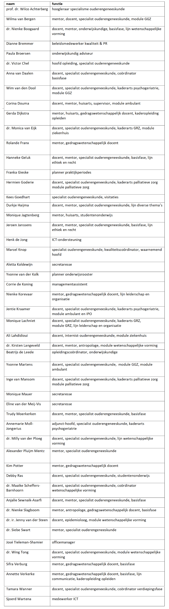

Medewerkers
In 2023 mochten wij 3 nieuwe collega’s in ons SOOL-team begroeten:
Sifra Verburg
Monique Jagtenberg
Kees Goedhart
Daarentegen werd er in 2023 helaas van 3 zeer gewaardeerde docenten en collega’s afscheid genomen
Bart Beck
Elske van Pienbroek
Tony Poot
De opleiding voldoet ruimschoots aan de vereiste formatie, zoals genoemd in het kaderbesluit CHVG: per aios wordt de opleiding geacht 0,15 fte aan medewerkers in dienst te hebben. Deze 0,15 fte wordt onderverdeeld in 0,10 fte academisch gevormd, onderwijsgevend personeel en 0,05 fte ondersteunend personeel. De helft van het academisch gevormd personeel (0,05 fte) dient te bestaan uit specialisten die tenminste vijf jaar geregistreerd zijn in het betreffende specialistenregister.
Zie onderstaande tabel voor de in 2023 aan het opleidingsinstituut verbonden medewerkers:
